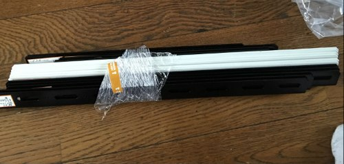
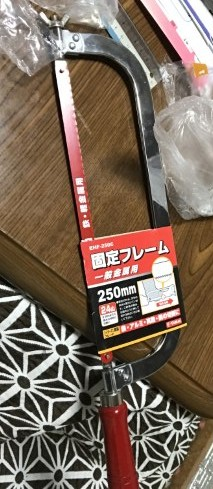
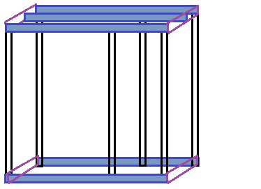
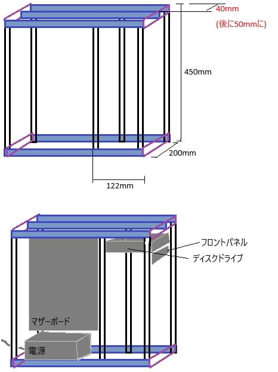

PC自作録 6.ケース設計
ケース自作する
本来自作PCのケースと言えば購入するのが一般的だが、折角なので自作してみる。
そもそもPCのケースの役割はマザーボード等を保護し、PCの部品をまとめることなので性能には直結しない（温度関係は影響するけど）。
自分が目指す理想のケースはこんな感じ。
・ケース片側が透明
・骨組みは頑丈にする
・空気の通りを考えた設計
・大きなグラボも入る余裕
ケースの片側を透明にするにはアクリル板か透明塩ビ板を使えば良い。
大きなグラボが入る設計にすれば空気の通りも良くなるだろう。
骨組みに関しては木とかパイプとか検討したが、最終的にはカラーアングルを使用することに決定した。
ホームセンターでカラーアングルと固定用ボルトと金工鋸を購入してきた。


購入したカラーアングルは以下の通り
next カラーアングル 30型 450mm 9本
next カラーアングル 30型 300mm 4本
このアングルを組んでいくわけだが、図に書いてある200mmのアングルは無い。
これは、300mmのアングル4本を買った金工鋸で200mmに切って使う。
あとはいい感じに下の図みたいにやればいける（適当）。組み立て中の写真は取ってなかった。

《詳細》アングルなのでL字の角に合わせて組み立てる。
200mmにカットしたアングルは紫色の部分に取り付ける。
部品の配置やそれぞれの寸法は以下の通り。

電源ユニットを最下段に配置し、マザーボードは上のアングル(3本並んでるうちの真ん中のやつ)から下に金具(取り付け用マウント的なものを作る)を伸ばしてマザーボードを取り付ける計画。
ディスクドライブは上のアングルとフロントパネルの間にすることでドライブの固定部分をドライブ後方の2箇所のみにしてある。
その他
ケース完成後の写真も撮ってない(パーツを組み込んだときまで撮ってない)のでケースの画像は次回にまわす。
せっかくなので新たに得られた情報をここに。
・ドライブの取り付けはM3ねじを使う
どこかのサイトで見たので実際に検証してみたらM3×6ネジで確かに取り付けられた。
もしかしたら以前書いたかも
・金工鋸は時間がかかる
そりゃ金属を手作業で加工するわけなので当然だがカラーアングルの切断は苦行だった。
もし十数本とか加工する場合は他の方法を要検討。
・マザーボードの取り付けはM4ねじを使う
マザーボードのネジ穴はM5ねじだと入らなかった。M4ねじが丁度良かった。
自分の使っているマザーボードでは大丈夫だったが、ネジ穴付近の実装部品にネジが当たる場合は絶縁ワッシャー必須。(そんなマザーボードあるのか?)